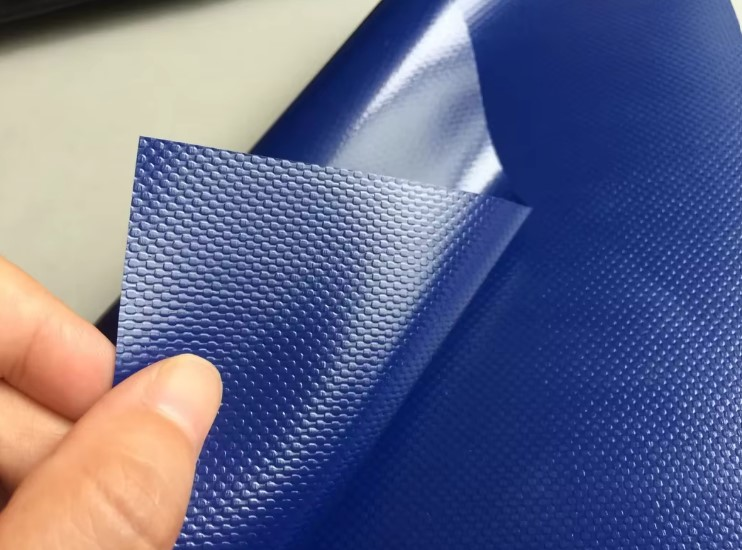
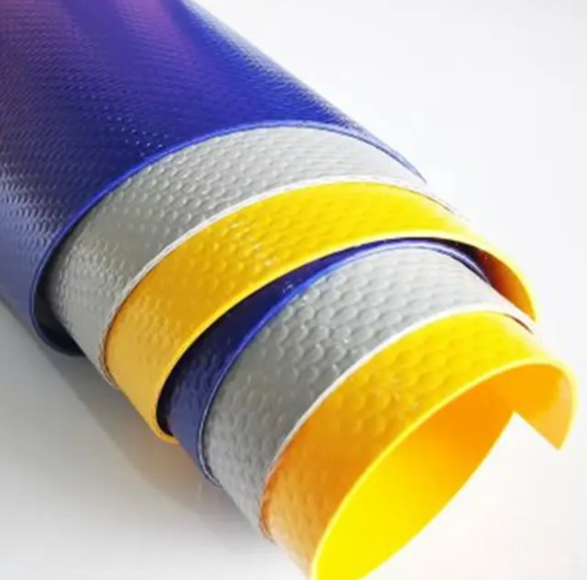
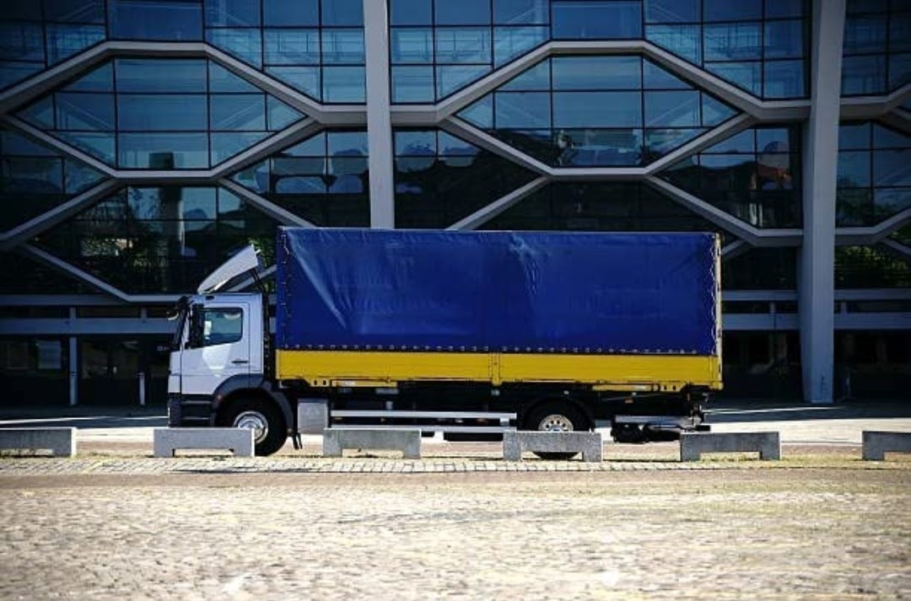
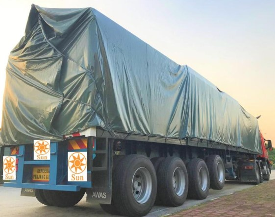
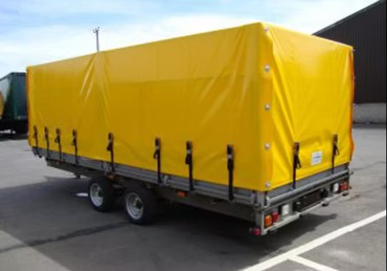
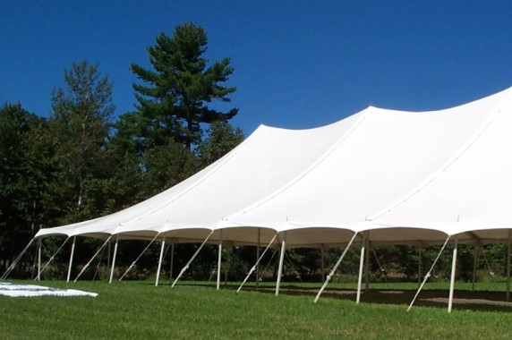
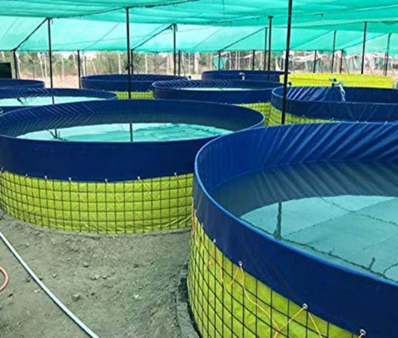
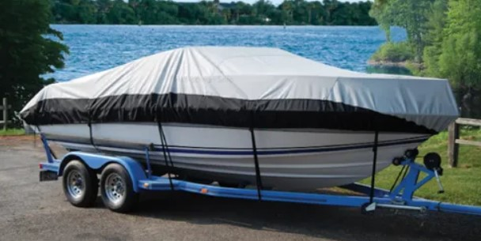

Heavy-duty nylon tarpaulin sheets designed to provide superior protection against water, dust, and harsh environmental conditions.









Nylon Tarpaulins are premium-grade protective sheets widely used for covering, waterproofing, and shielding materials and equipment from environmental exposure.
Manufactured using strong nylon fabric with protective coatings, these tarpaulins offer excellent tear resistance, flexibility, and long service life in demanding conditions.
For Indian conditions, nylon tarpaulins are recommended where frequent tying, folding, and abrasion are expected. Selecting appropriate GSM and reinforced edges significantly improves service life in highway and construction use.